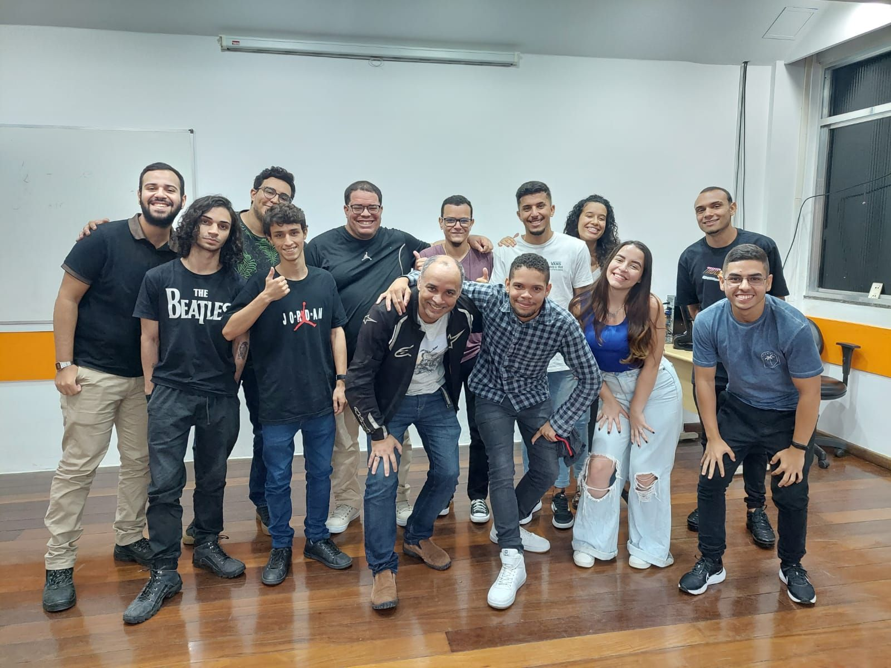

Eleve seu negócio digital a outro nível com qualidade!
Olá! Me chamo Arian Weslley, sou um desenvolvedor Full-Stack apaixonado por tecnologia, com expertise em Java, Angular, HTML, CSS e Javascript/Typescript.
No curso de técnico de informática tive a oportunidade de ampliar meus conhecimentos nas tecnologias de programação, como PHP, Java e Typescript. Além disso, adquiri habilidades na construção de aplicações web com HTML, CSS, Javascript, Angular e Ionic, tornando-me apto a atuar como desenvolvedor Full-Stack.
Mas, dentro do Senac também fiz outro curso super essencial para meu aprendizado! No curso de PHP com Programação Orientada a Objetos, tive a oportunidade de ampliar meus conhecimentos na linguagem, aprendendo conceitos básicos e intermediários. Além disso, outro ponto fundamental destacado no curso foi o uso de padrões de projeto, como MVC e Arquitetura Limpa, que permitiram aplicar os conceitos em projetos práticos.
"💫 Ao fechar os olhos, mergulho em um universo de códigos e possibilidades infinitas."
- Nasci em 20/12/2001
- Botafoguense
- De Niterói
- Java 🤝 Angular
- Sempre estudando
- Apaixonado por praia 🏖